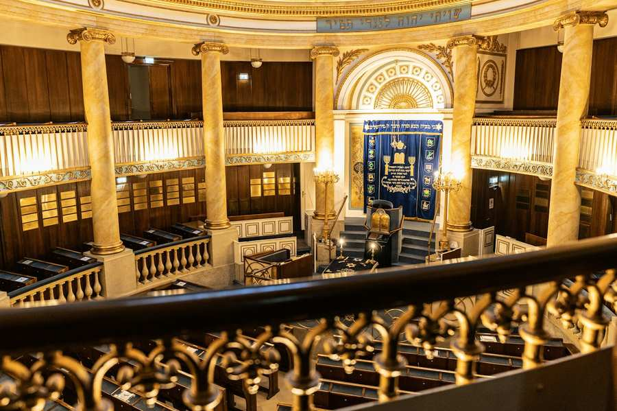

Due to its historical and cultural significance, the Stadttempel in Vienna is a must-see for anybody visiting the city. Since 1811, it has been the spiritual center of Vienna's Jewishcommunity. The former Dempfingerhof, originally located in Seitenstettengasse 4, functioned as a place for Jewish religious life. Although Emperor Joseph II issued the Tolerance Patent in 1782, offering more liberties to the Jewish population, the public practice of Judaism was not included.

Tolerancebethäuser, or non-Catholic places of worship, were required to be "hidden" from the public view and not visibly recognized from the outside. As a result, the synagogue was incorporated into a larger building complex. It operated as an unrecognized synagogue and community, holding worship services and festivities behind closed doors. It was the only Synagogue that was not destroyed during the so-called Kristallnacht (Pogromnacht). The Stadttempelis now open to both worshipers and tourists. Tours can also be booked through the website www.jewishinfopoint.at/ on short notice.
The construction of the Stadttempel was finished in 1826 and was planned by architect Joseph Kornhäusel, who was well-known for his work on prominent buildings such as the Theater in Josefstadt. The decorations, which include flowery gold themes, and the interior layout, which includes a gallery, stage, platform, parquet flooring, and lodges, are reminiscent of a traditionalViennese theater. The stage, which houses the Bimah (pulpit) and lectern, is the focal point. Entering the Stadttempel is a remarkable experience. The lofty ceilings and magnificent chandeliers create a devoted and spiritual experience. The elegantly built ark that contains the Torah depicts Judaism's rich traditions and ceremonies. Every feature of the synagogue has been thoughtfully considered, creating an atmosphere that inspires reflection.
The Stadttempel is a prominent core of Jewish life in Vienna. It offers weekly Shabbat celebrations, Bar and Bat Mitzvah ceremonies, weddings, and other Jewish holidays in addition to regular worship services. Jaron Engelmayer, the Chief Rabbi of Vienna, and Shmuel Barzilai, the Chief Cantor, serve at the Stadttempel. If you want to visit the Stadttempel for prayer without a guided tour or not being a member of the IKG Wien (Israelitische Kultusgemeinde Wien), you can find more information on the Stadttempel's main website.
Stadttempel also pays honor to Austrian Jewish Shoah victims. Prior to WWII, Vienna housed nearly 200,000 Jews, accounting for 90% of Austria's Jewish population. As a result of Hitler's ascent to power and the Nazi regime's takeover of Austria, 100,000 Jews were forced to escape, and 62,400 were murdered in extermination and concentration camps. The names of these Jewish victims, officially researched by the Austrian Resistance Documentation Archive, appear on enormous black slate panels in the Stadttempel's antechamber. As a monument, these panels are organized in the shape of a book around a column. The broken granite column represents the destiny of Jews in the twentieth century, while a glass cone-shaped column continues downwards, representing a new beginning after the Shoah. Inside the synagogue, there are additional commemorative plaques with names recognizing the victims and community members.
The Stadttempel in Vienna is a must-see for anybody curious about the city's rich historical and cultural history. It has played an essential role in the city's history as the center of faith of Vienna's Jewish population since 1811. With its sophisticated internal layout, the synagogue captivates tourists with its architectural beauty. Furthermore, the Stadttempel is a lively center for Jewishlife, hosting a variety of religious rituals and events, as well as honoring the memory of Austrian Jewish Shoah victims with moving memorials.